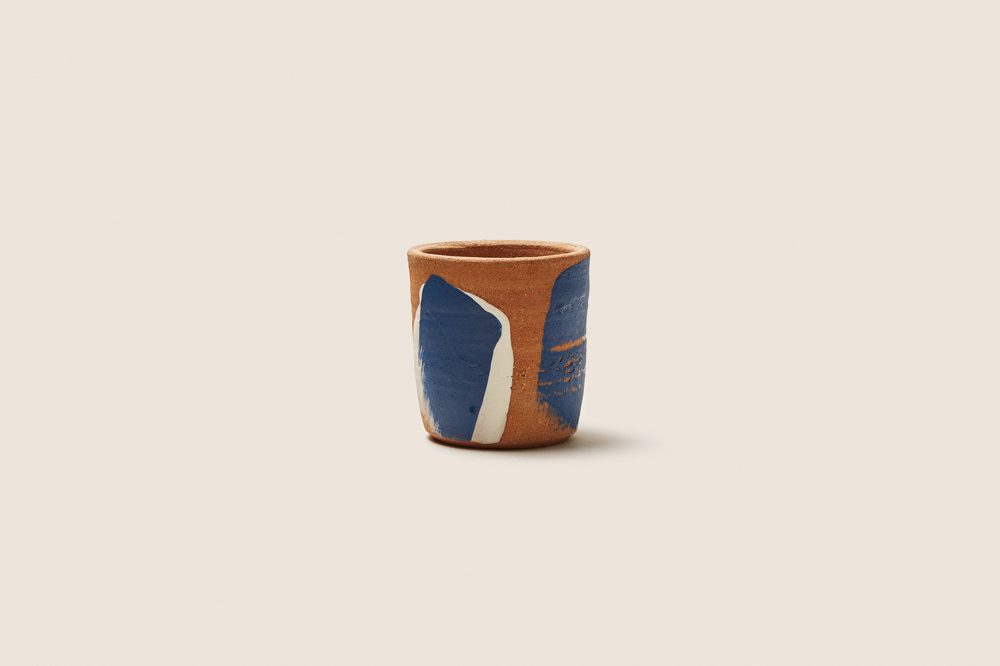
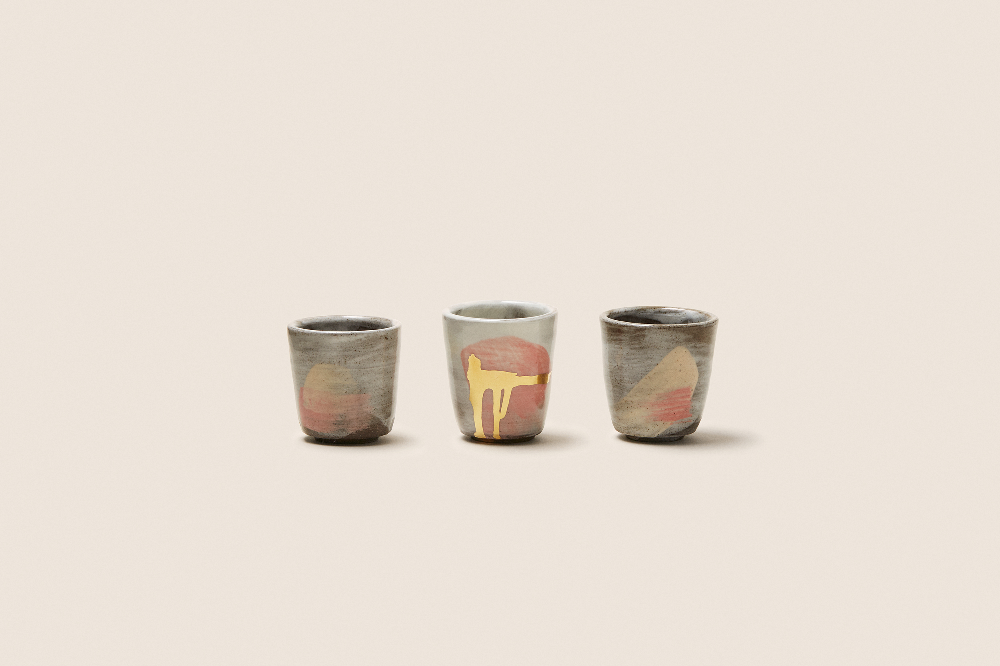
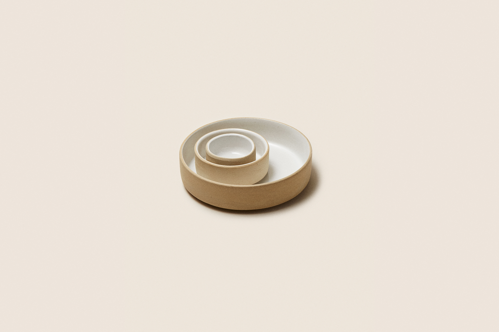
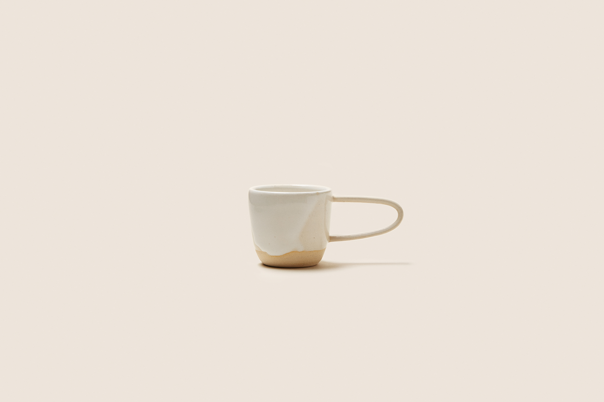

<!doctype html><html lang="en"><meta charset="utf-8"><meta name="viewport" content="width=device-width,initial-scale=1"><title>Gallery | Robin Schlenger Archive</title><link rel="stylesheet" href="style.css"><header><a href="index.html"><strong>Training With an Anti-Oppressive Lens</strong><small>Robin Schlenger, LCSW · Offline archive</small></a><nav><a href="index.html">Blog</a><a href="pages.html">Other pages</a><a href="README.html">About this archive</a></nav></header><main><article class="article"><p class="date">Mon, 12 Ma</p><h1>Gallery</h1><div><figure class="archived-image"></figure><figure class="archived-image"></figure><figure class="archived-image"></figure><figure class="archived-image"></figure></div></article></main><footer>Preserved from a Squarespace XML export · Original words retained</footer></html>